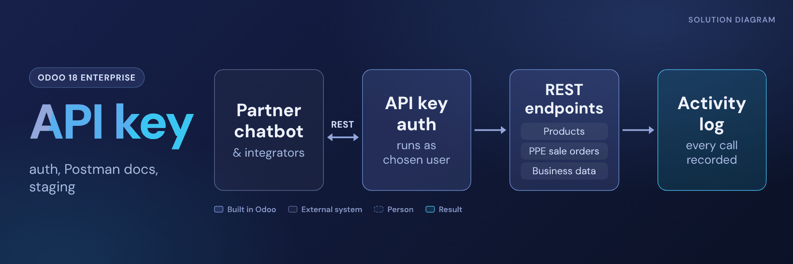

Odoo 18REST APIIntegrationSecurity
Partner REST API & Chatbot Integration
API-key REST API for products and orders, plus a chatbot module exposing business data to a partner
About this project
Built secure integration APIs for third parties. A REST API exposes products and PPE sale orders, and a separate module exposes TTI business data to a partner's chatbot. Both authenticate with a static API key that runs as a chosen user, ship with Postman collections and documentation, and were deployed to a staging environment for the partner's testing.
Key deliverables
- Static API-key authentication that runs as a chosen user, with a test-connection endpoint
- Products and PPE sale orders API with server-side aggregation and spec-conformance tests
- Activity log and prompt-activity views for every API call
- Postman collections and written API guides for the integration team
- Staging environment prepared for partner development and testing